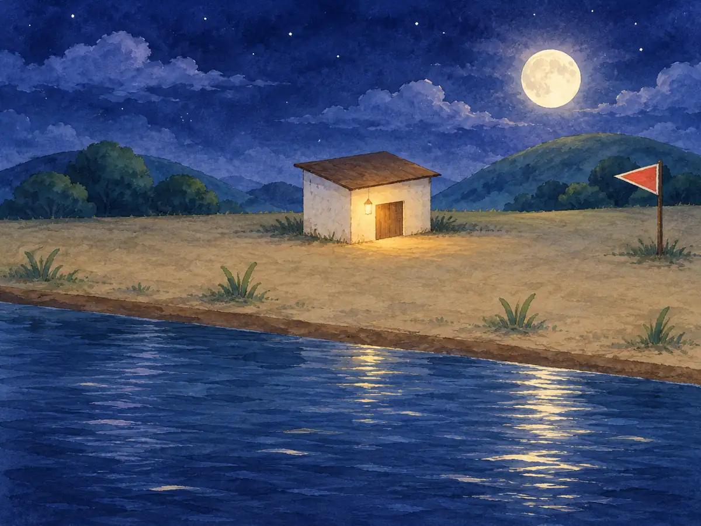

キャンプば
よるの キャンプ。ゆっくり していってね。

キャンプの じゅんびを しているよ。もうすこし まってね。
たきびが、ぱち ぱち。ゆっくり していってね。
おうちの かたへ
ここは、のんびり すごすための ばしょです。てんすう・じかん・ランキングは ありません。さわっても、なにも へらず、しっぱいも ありません。うごきを へらす せっていでは、ひのこを だしません。おうちの かたへ
よるの キャンプ。ゆっくり していってね。

キャンプの じゅんびを しているよ。もうすこし まってね。
たきびが、ぱち ぱち。ゆっくり していってね。
ここは、のんびり すごすための ばしょです。てんすう・じかん・ランキングは ありません。さわっても、なにも へらず、しっぱいも ありません。うごきを へらす せっていでは、ひのこを だしません。おうちの かたへ